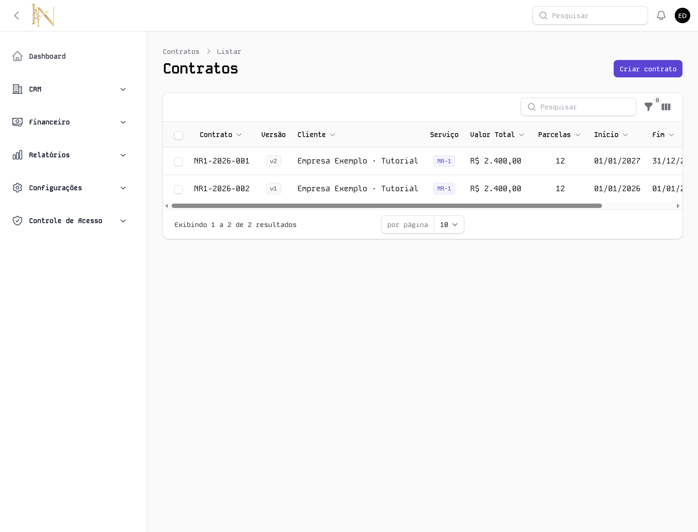
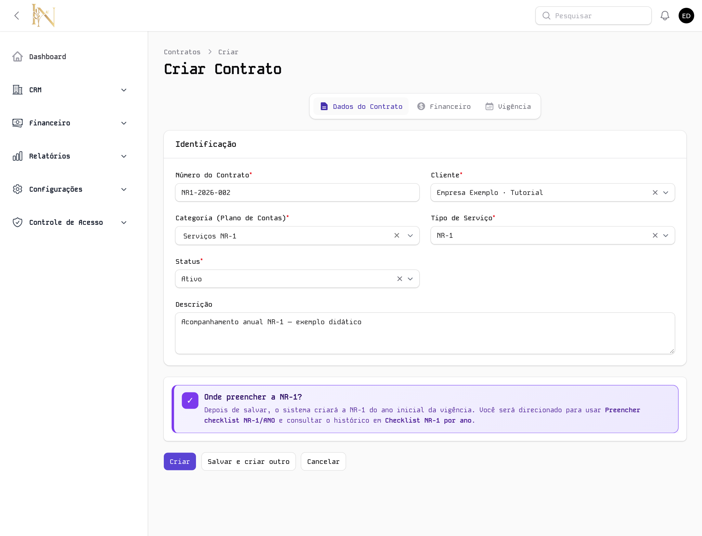
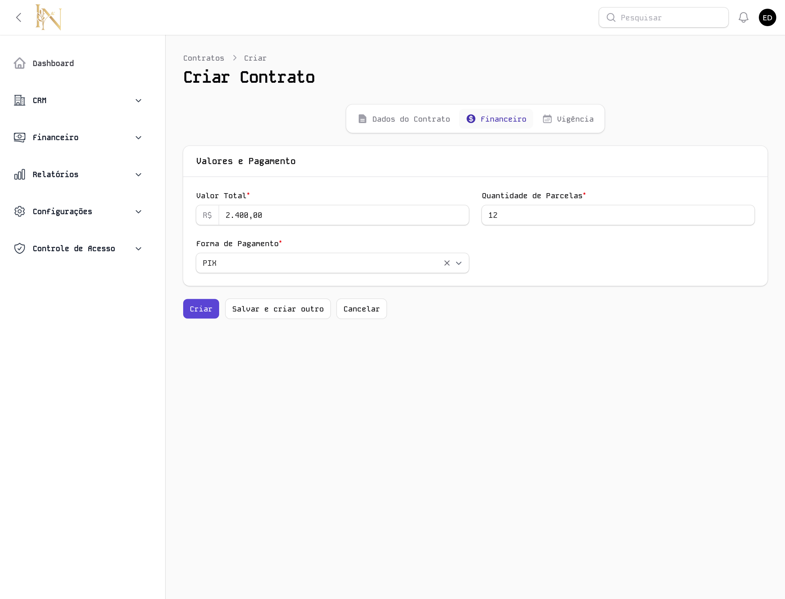
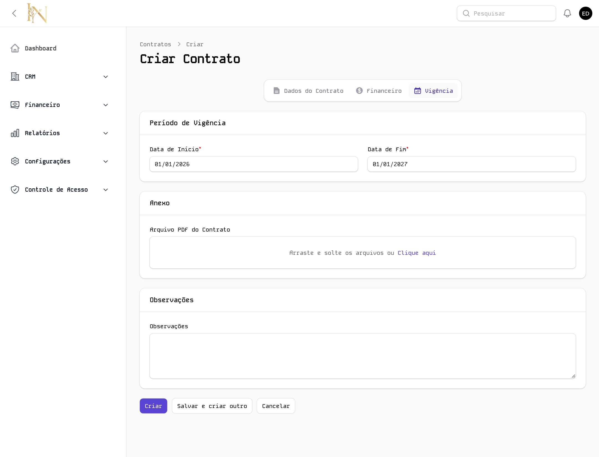
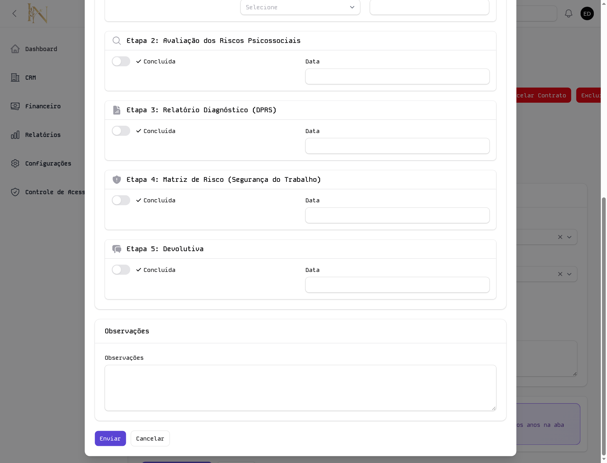
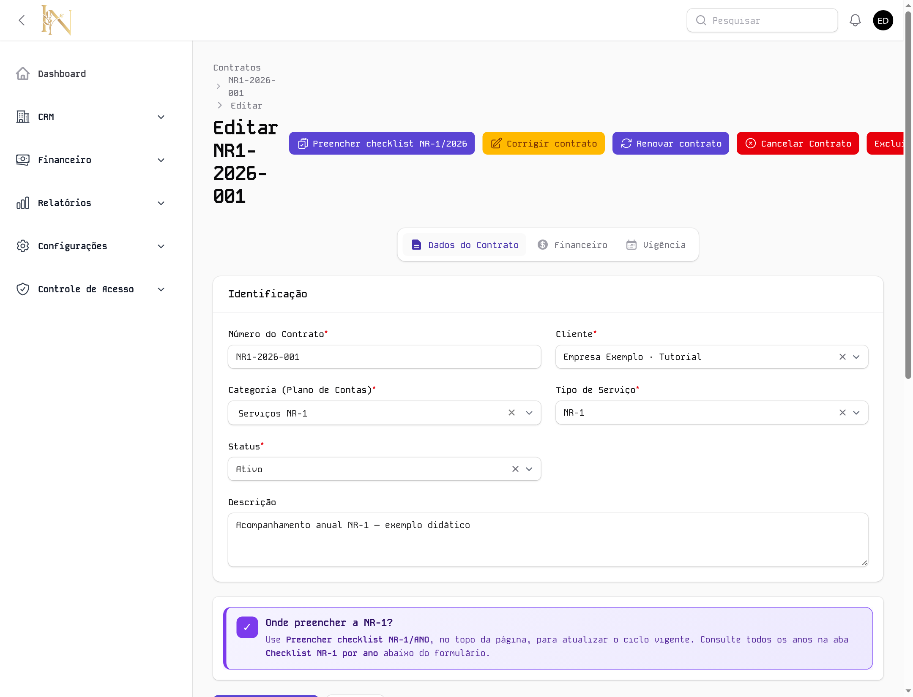
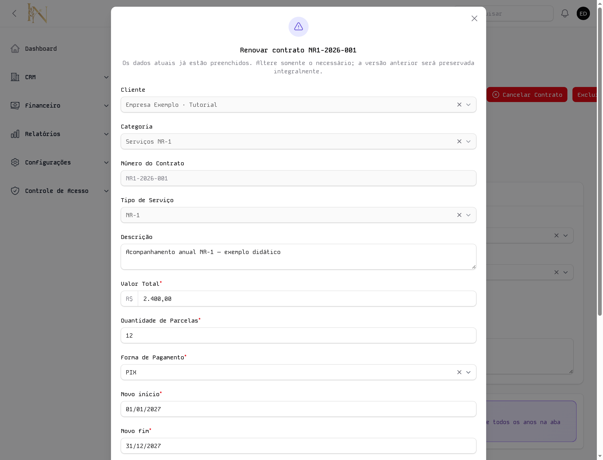
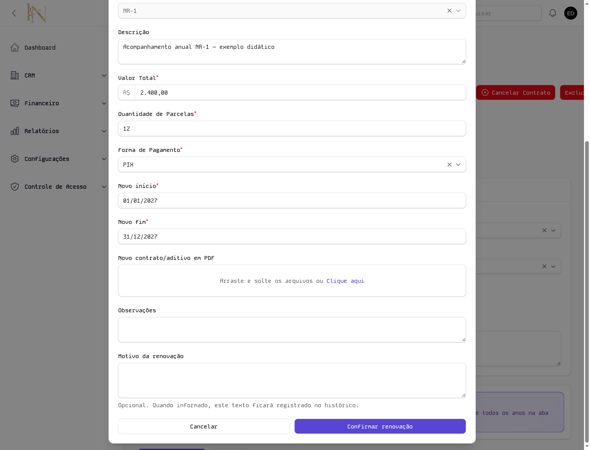
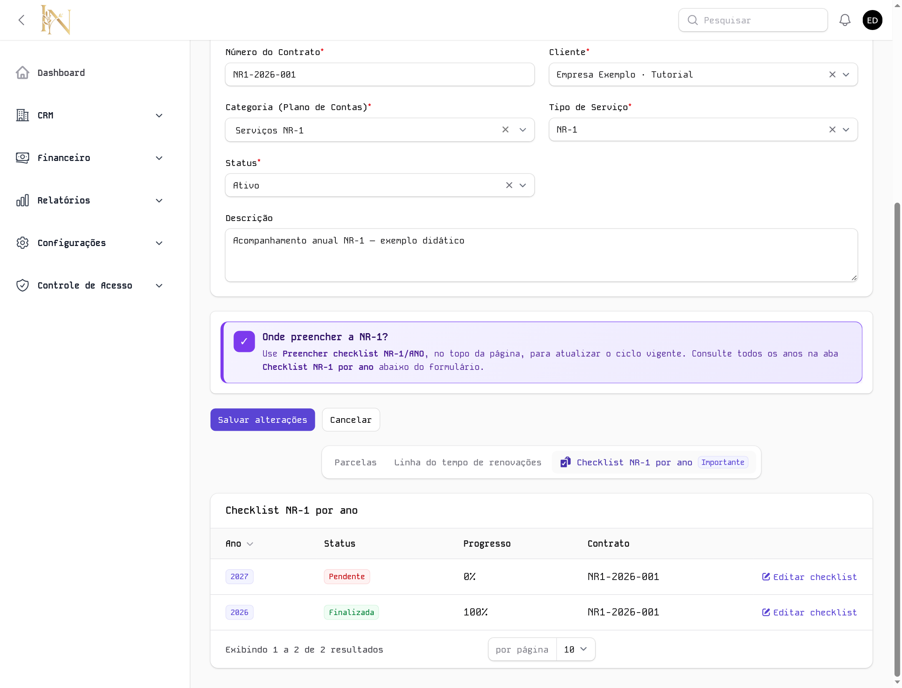

Cada contrato NR-1 tem seu checklist organizado por ano. O ano do ciclo vem da data de início da vigência.
Criar contrato → selecionar NR-1 → salvar → preencher checklist.
O sistema abre automaticamente o primeiro ciclo.
Abrir contrato → Renovar contrato → confirmar → preencher novo ciclo.
O ciclo anterior permanece no histórico.
Comece em CRM → Contratos. Para cadastrar, clique em Criar contrato. Para renovar, localize e abra o contrato existente.

11 · Botão de cadastro. Tenha o cliente e a categoria do plano de contas já cadastrados. Os números e valores deste guia são apenas exemplos.

1
Valor Total: valor contratado.
Quantidade de Parcelas: número de parcelas acordadas.
Forma de Pagamento: selecione a opção combinada.
R$ 2.400,00 em 12 parcelas, por PIX.
Use os dados reais do seu contrato e avance para a aba Vigência.
O cadastro do contrato gera as parcelas financeiras automaticamente. Revise valor, quantidade e forma de pagamento.

12Na edição do contrato, clique em Preencher checklist NR-1/ANO. Confira o ano e o contrato no início da janela.

1Em CRM → Contratos, abra o contrato NR-1 que será renovado. No topo da edição, clique em Renovar contrato ①.

1

12Depois da confirmação, use Preencher checklist NR-1/2027 no topo do contrato. Para conferir todos os anos, desça abaixo do formulário e abra Checklist NR-1 por ano.

12Começa Pendente, com 0%. Clique em Editar checklist na linha de 2027 ou use o botão do topo para preencher as etapas.
No exemplo, continua Finalizada, com 100%. A renovação não limpa o checklist anterior. Confira o ano antes de editar qualquer linha.
A aba Linha do tempo de renovações mostra as versões e suas vigências. O ano identifica a NR-1; a versão registra o histórico contratual.
Confira o tipo de serviço e a aba de histórico. Se faltarem ciclos ou ações esperadas, solicite a verificação ao administrador antes de cadastrar outro contrato.